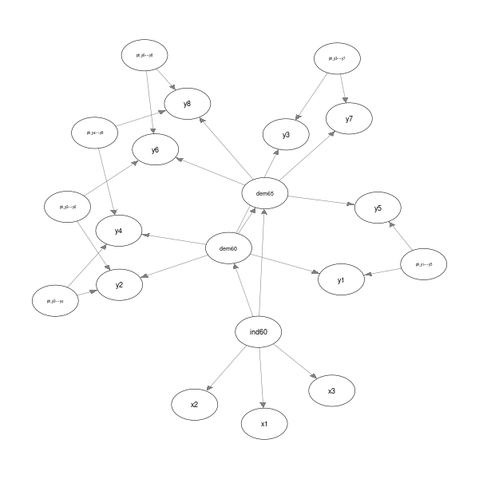
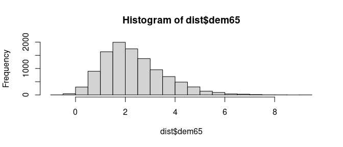
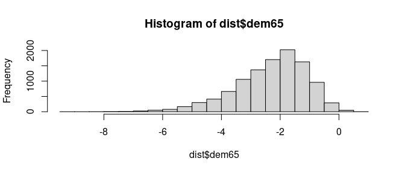

Warning: bnSEM is very experimental. There are probably already better packages out there that do the same thing. The main objective of bnSEM is to explore similarities between SEM and Bayesian Networks.
Structural Equation Models (SEM) and Bayesian Networks are closely related. The objective of bnSEM (Bayesian Network SEM) is to easily transition from SEM to Bayesian Networks. To this end, bnSEM translates SEM fitted with OpenMx (Neale et al., 2016) to Bayesian Networks in bnlearn (Scutari, 2009).
Installation
You can install the development version of bnSEM from GitHub with:
# install.packages("devtools")
devtools::install_github("jhorzek/bnSEM")Example
We first estimate the SEM with OpenMx.
library(mxsem)
model <- '
# latent variable definitions
ind60 =~ x1 + x2 + x3
dem60 =~ y1 + a*y2 + b*y3 + c*y4
dem65 =~ y5 + a*y6 + b*y7 + c*y8
# regressions
dem60 ~ ind60
dem65 ~ ind60 + dem60
# residual correlations
y1 ~~ y5
y2 ~~ y4 + y6
y3 ~~ y7
y4 ~~ y8
y6 ~~ y8
'
mx_model <- mxsem(model,
data = OpenMx::Bollen) |>
OpenMx::mxTryHard()Next, we translate the model to a Bayesian Network:
To get an impression of the network, you can create a plot:
library(qgraph)
qgraph::qgraph(network$dag)
Inference
With our Bayesian Network, we can now investigate the conditional distribution of variables in our model (see vignette("Example", package = "bnSEM") for a comparison to rejection sampling)
# Check conditional distribution
# probability that dem65 in (1,2) given dem60 > 1:
bnlearn::cpquery(fitted = network$bayes_net,
event = (dem65 > 1 & dem65 < 2),
evidence = (dem60 > 1))
#> [1] 0.3425735
# Get distribution under this assumption:
dist <- bnlearn::cpdist(fitted = network$bayes_net,
node = "dem65",
evidence = (dem60 > 1))
hist(dist$dem65)
# Now check dem60 < -1
dist <- bnlearn::cpdist(fitted = network$bayes_net,
node = "dem65",
evidence = (dem60 < -1))
hist(dist$dem65)
Additionally, we can investigate interventional distributions. This is fairly experimental and has not really been tested - so take everything in the following with a large grain of salt.
In bnlearn, the interventional distribution can be investigated using mutilated networks. For example, let’s assume we intervene on the latent dem60 variable by setting its value to 2:
We can then investigate the distribution of the dependent variable dem65
inter_dist <- cpdist(fitted = mut,
nodes = "dem65",
evidence = TRUE,
method = "lw")
# mean
(m <- sum(inter_dist$dem65 * attr(inter_dist, "weights")) / sum(attr(inter_dist, "weights")))
#> [1] 1.734475
# variance
sum(attr(inter_dist, "weights") * (inter_dist$dem65 - m)^2)/
sum(attr(inter_dist, "weights"))
#> [1] 0.326892This is higher than the original estimates for the mean and variance of dem65 because dem60 has an effect on dem65:
mx_model$M$values[,"dem65"]
#> dem65
#> 0
mx_model$S$values["dem65", "dem65"]
#> [1] 0.1644651Now, let’s also look at the expected value for ind60:
inter_dist <- cpdist(fitted = mut,
nodes = "ind60",
evidence = TRUE,
method = "lw")
# mean
(m <- sum(inter_dist$ind60 * attr(inter_dist, "weights")) / sum(attr(inter_dist, "weights")))
#> [1] 0.006812912
# variance
sum(attr(inter_dist, "weights") * (inter_dist$ind60 - m)^2)/
sum(attr(inter_dist, "weights"))
#> [1] 0.454824Because dem65 has no effect on ind60, this is identical to the estimated mean and covariance for ind60 in the original model:
mx_model$M$values[,"ind60"]
#> ind60
#> 0
mx_model$S$values["ind60", "ind60"]
#> [1] 0.4485991Checking the model
To check our Bayesian Network, we can also simulate data from the network and refit our SEM to check if the estimates align:
sim <- bnlearn::rbn(x = network$bayes_net, n = 100000)
fit_sim <- mxsem(model,
data = sim[,mx_model$manifestVars]) |>
OpenMx::mxTryHard()
round(coef(fit_sim) - coef(mx_model), 3)
#> ind60→x2 ind60→x3 ind60→dem60 ind60→dem65 a b
#> 0.000 -0.003 -0.007 0.001 -0.004 -0.002
#> c dem60→dem65 y1↔y1 y2↔y2 y3↔y3 y2↔y4
#> -0.006 0.001 0.008 0.018 0.000 0.017
#> y4↔y4 y2↔y6 y6↔y6 x1↔x1 x2↔x2 x3↔x3
#> 0.007 -0.018 0.009 0.000 -0.002 0.000
#> y1↔y5 y5↔y5 y3↔y7 y7↔y7 y4↔y8 y6↔y8
#> 0.009 0.015 -0.011 -0.005 -0.011 -0.022
#> y8↔y8 ind60↔ind60 dem60↔dem60 dem65↔dem65 one→y1 one→y2
#> -0.002 0.000 0.013 0.001 -0.005 -0.003
#> one→y3 one→y4 one→y6 one→x1 one→x2 one→x3
#> -0.015 -0.010 -0.005 -0.002 -0.004 -0.002
#> one→y5 one→y7 one→y8
#> 0.003 -0.014 -0.012Central Challenge
When transitioning from SEM to Bayesian Network, a central challenge is the use of covariances as parameters in SEM. To translate those covariances to a model that can be easily used with Bayesian Networks, bnSEM replaces covariances with direct effects of unobserved phantom variables. The approach is explained in more detail, for instance, by Merkle & Rosseel (2015; see p. 8).
References
- OpenMx: Neale, M. C., Hunter, M. D., Pritikin, J. N., Zahery, M., Brick, T. R., Kirkpatrick, R. M., … & Boker, S. M. (2016). OpenMx 2.0: Extended structural equation and statistical modeling. Psychometrika, 81, 535-549.
- bnlearn; Scutari, M. (2009). Learning Bayesian networks with the bnlearn R package. arXiv preprint arXiv:0908.3817.
- Merkle, E. C., & Rosseel, Y. (2015). blavaan: Bayesian structural equation models via parameter expansion. arXiv preprint arXiv:1511.05604.